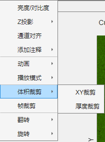
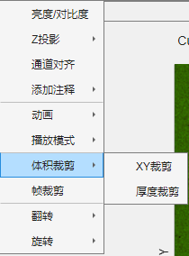

1.2.7 体积裁剪
 体积裁剪包括XY裁剪(Crop XY)以及厚度裁剪(Crop Z)，用于裁剪数据的空间范围。 注1：XY裁剪需要设置ROI后单击XY裁剪。您可以在主窗体右键菜单中选择合适的ROI。 Z裁剪需要在提示框内输入裁剪(保留)范围，如下图所示。框内使用MATLAB切片语法，end代表最后一层。 注2：体积裁剪将生成系统还原点。

体积裁剪包括XY裁剪(Crop XY)以及厚度裁剪(Crop Z)，用于裁剪数据的空间范围。
注1：XY裁剪需要设置ROI后单击XY裁剪。您可以在主窗体右键菜单中选择合适的ROI。
Z裁剪需要在提示框内输入裁剪(保留)范围，如下图所示。框内使用MATLAB切片语法，end代表最后一层。
注2：体积裁剪将生成系统还原点。